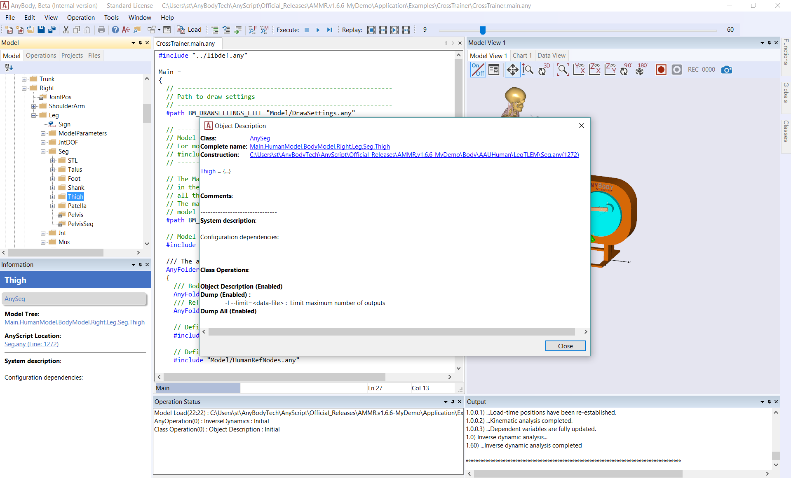

Lesson 5: Min/Max Muscle Recruitment#
Old tutorial:
This tutorial has not yet been updated to ver. 7 of the AnyBody Modeling System. Some concepts may have changed.
With the exception of the linear criterion, each of the options presented in the previous lessons have produced plausible muscle recruitment patterns. We have found that polynomial criteria of increasing order produce increasing degrees of synergism between the muscles. Maximum synergism would be the case where all muscles capable of a positive contribution to balancing the external load work together in such a way that the maximum relative load of any muscle in the system is as small as possible. This would physiologically be a minimum fatigue criterion because fatigue is likely to happen first in the muscle with the maximum relative load, and it makes physiological sense that the body might work that way. It would mean that the body would maximize its endurance and precisely this criterion might decide survival of the fittest in an environment where organisms are competing with each other for limited resources.
Mathematically, it turns out that we would get exactly that kind of recruitment if we let the power of the polynomial criterion go to infinity. It would not be numerically possible to do that with the polynomial algorithm we presented in the previous lesson, so it is necessary to use a dedicated algorithm for that purpose. In its pure form it is called MinMaxStrict, and we might as well try it out on the bicycle example right away. It is necessary to change just a little bit in the definition of the study:
AnyBodyStudy Study = {
AnyFolder &Model = .Model;
Gravity = {0.0, -9.81, 0.0};
tEnd = Main.BikeParameters.T;
nStep = 100;
InverseDynamics.Criterion = {
Type = MR_MinMaxStrict;
};
};
Reloading and rerunning give us the following result:

When comparing with the muscle activation curves we have seen earlier it looks like there are less muscles represented on this one, but that is not actually the case. It just looks like there are fewer curves here because a lot of them are exactly on top of each other. This is a logical consequence of minimizing the maximum muscle activity: when muscles help each other as much as they can, many of them end up with the same activity.
Min/max recruitment leads to a very well-defined envelope of muscle activation, and it plays an important role in a lot of cases of ergonomic design. It is so important, in fact, that the envelope has its own predefined output variable placed alongside the other global values such in the study:

The variable, MaxMuscleActivity, is interesting because the maximally activated muscle(s) in the problem likely determine the perceived effort. To illustrate this, think of lifting an average size bag. It may not be difficult to do with your hand, but if you were to grab the handle with your little finger only, then you would perceive the lifting of the bag as rather laborious because its weight would now have to be carried by a much higher maximum muscle activity in much smaller muscles. This means that the maximum muscle activity is a good measure to use in ergonomic design cases where we want to determine a tool or a posture that minimizes the effort of a given work task. Rather than having to review a lot of muscle activations in the entire body we can capture the effort in a single curve as shown above.
Closer inspection of the curve above shows that the muscle activation peaks at 88.2%. Near the top of the Bike2D file you find the variable SaddleHeight. As the name indicates, it determines the height of the saddle of the bike, or more precisely the vertical distance between the crank shaft and the hip joints. The current value is 0.63 m. Try raising the saddle by 2 cm by the following change:
AnyVar SaddleHeight = 0.65; //Height of hip joint measured vertically from the crank
Then load and run the problem again and plot the MaxMuscleActivity. It now peaks at 83.5% indicating that the higher saddle has made it somewhat easier for the rider to pedal the bicycle.
Notice that the maximum muscle activity is defined for any type of muscle recruitment, but the min/max muscle recruitment illustrates its definition better because it leads to such a clear envelope. Furthermore, because min/max recruitment causes the muscle to cooperate as much as possible, the envelope simulated by this criterion is smaller than or equal to the envelope of any other criterion that can be defined. In terms of maximum muscle activity, the min/max muscle recruitment simply leads to the lowest possible maximum activation by which the external load can be carried. While this may or may not be the way muscle are recruited in reality, it is a better way of assessing ergonomics than most of the other criteria we can think of. If we run the bicycle simulation with AnyBody’s standard muscle recruitment (third order polynomial with upper bounds on activities) for saddle heights of 0.63 m and 0.65 m and plot the two curves of maximum muscle activation, we can get the following:

Notice that because the upper bounds on muscle activation become active, the curves have the same maxima despite the change of saddle height, and the ergonomic advantage of the higher saddle comes out as a smaller area under the red curve compared to the blue.
The reason why the MinMaxStrict criterion is not the default in AnyBody despite its attractive properties for ergonomic investigations is that it switches muscles in and out very abruptly when they change moment arms from negative to positive. These sudden shifts may sometimes happen faster than physiologically possible and they also mean that muscles with just a marginally positive contribution will be activates to their full potential. As we have seen in the previous sections, lower order polynomial criteria do not have that type of behavior.
It is tempting to think that there might be a compromise between polynomial and the min/max criterion that would have the attractive properties of both strategies, i.e. get close to the minimum activation or fatigue of the muscle system and also have relatively smooth activation curves. In the next tutorial we shall look at composite criteria that might combine some of the attractive features of the pure criteria we have investigated so far. This takes place in Lesson 6: Composite Recruitment Criteria.